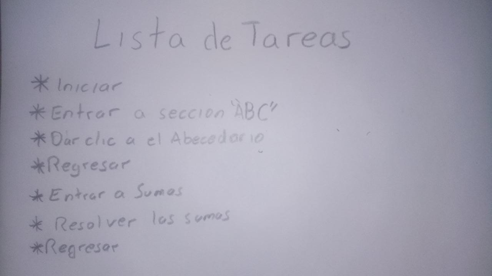

1° PARTE
----
2° PARTE
Profesor : Edgar Arturo Dávila Matínez
Grupo: 1643
Seccion de diseños
Diseño personaje_1
Diseño personaje_2
Prototipos:
Prototipo1
Prototipo2

el usuario hice una buena interaccion con el prototipo
solo se haran unas modificaciones en la intefaz"mas infantil para el usuario"